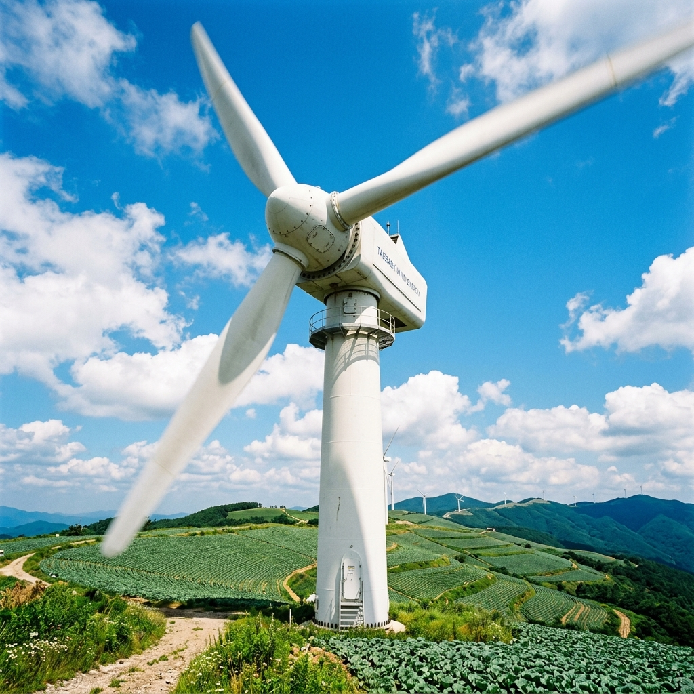
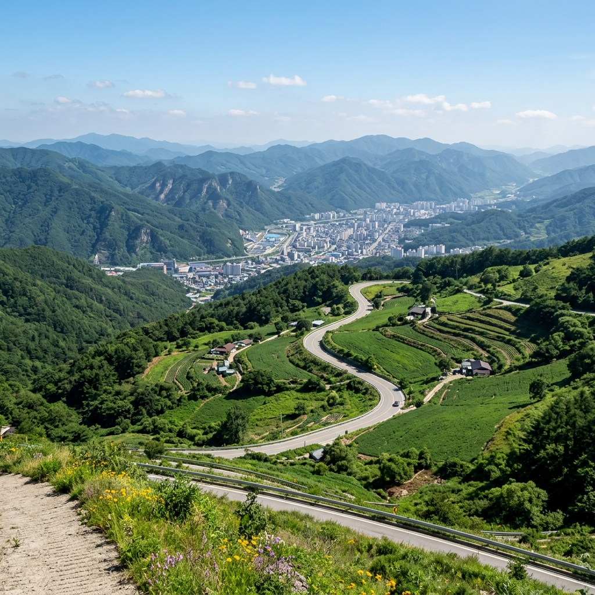

강원도 태백시 삼수동에 위치한 매봉산(해발 1,303m)은 국내 최대 규모의 고랭지 채소 재배지 가운데 하나입니다. 산 능선을 따라 고랭지 배추밭이 펼쳐지고, 그 사이에 풍력발전기가 줄지어 서 있어 독특한 경관을 만들어 냅니다.
이 일대를 바람의언덕이라고 부르는 이유는 태백 고원 특유의 강한 바람 때문입니다. 한여름에도 배추밭 사이를 거닐면 시원한 바람이 끊이지 않습니다.
특히 7월 중순 이후에는 배추 모종이 자라기 시작해 능선 전체가 초록으로 물드는 장관이 펼쳐집니다. 8월 말~9월에는 배추가 크게 자라 수확 직전 최고의 경관을 볼 수 있습니다.
| 항목 | 내용 |
|---|---|
| 입장료 | 무료 (별도 요금 없음) |
| 운영 시간 | 상시 개방 (24시간, 연중) |
| 주차 | 능선 진입 전 주차 공간 이용, 무료 |
| 차량 진입 제한 | 7월 말~8월 배추밭 보호 기간 중 능선 도로 진입 통제 가능 |
| 문의 | 태백시청 관광진흥과 033-550-2083 |
차량 통제 시에는 주차장에서 도보로 올라가야 합니다. 경사는 크지 않고 왕복 30~40분 거리입니다. 도보 접근도 나쁘지 않으므로, 통제 여부에 관계없이 방문을 계획해도 좋습니다.
태백 매봉산의 진짜 주인공은 풍력터빈이 아니라 배추밭입니다. 해발 1,200m 이상의 고원에 조성된 고랭지 배추밭은 규모 자체가 남다릅니다.
7월 중순 이후에는 모종이 빽빽하게 자라며 능선 전체를 녹색으로 물들입니다. 이 초록 물결과 흰 풍력터빈, 그리고 맑은 날 파란 하늘이 겹치는 장면은 국내 어디서도 쉽게 볼 수 없는 풍경입니다.
배추밭은 실제 농업 현장이라 출입을 삼가야 합니다. 능선 길 위에서 바라보는 것만으로도 충분히 장관이며, 작물에 피해를 주는 행동은 하지 않아야 합니다.
최고 뷰포인트는 능선 위 주차 공간에서 조금 더 걸어 올라간 풍력터빈 첫 번째 군집 앞입니다. 배추밭과 터빈이 한 프레임에 들어오는 위치로, 맑은 날에는 태백 시내까지 내다보입니다.
일출과 일몰이 모두 좋습니다. 일출 시 동쪽 태백 방향에서 여명이 올라오며 능선 실루엣이 아름답고, 일몰 시에는 서쪽 하늘이 붉게 물드는 배경 위로 터빈이 역광을 받습니다.
안개가 낀 날도 분위기가 있습니다. 고원 특성상 맑은 날보다 안개가 잦은 편인데, 안개 속에 터빈이 솟아오른 모습은 묘한 분위기를 냅니다. 단, 안개가 짙을 때는 시야 확보가 어려우므로 운전에 주의해야 합니다.

바람의언덕은 단독으로도 충분하지만, 태백 드라이브 코스로 묶으면 더 풍성한 여행이 됩니다.
추천 당일 코스
검룡소(한강 발원지, 8km 이내) → 매봉산 바람의언덕 → 태백석탄박물관 → 황지연못(태백 원도심) → 태백 한우 저녁
검룡소는 한강의 출발점으로 알려진 석회암 동굴 샘터입니다. 신비로운 물줄기가 솟아오르는 모습을 보면 '이 물이 서울까지 흐른다'는 사실이 실감납니다. 바람의언덕에서 차로 15분 내외 거리입니다.
태백석탄박물관은 과거 탄광 도시였던 태백의 역사를 담은 곳으로, 실제 갱도를 재현한 체험 시설이 인상적입니다. 여름철 시원한 실내 관람지로도 제격입니다.
자가용 이용
서울에서 영동고속도로 → 중앙고속도로 → 태백 방면으로 약 2시간 30분~3시간이 소요됩니다. 네비게이션에 '태백 매봉산 바람의언덕' 또는 '매봉산 풍력발전단지'를 검색합니다.
기차 이용
청량리역에서 태백선 ITX-청춘 또는 무궁화호를 타면 태백역에 도착합니다. 태백역에서 바람의언덕까지는 택시로 15~20분 거리입니다. 가는 편에 예약하고, 돌아오는 편도 미리 택시 기사에게 부탁해 두는 것이 편합니다.
해발 1,200m 이상 고원이라 여름에도 낮 기온이 20~25°C 내외입니다. 도심 대비 5~10°C가량 낮으니 긴소매 옷을 반드시 챙기세요.
바람이 강하기 때문에 모자는 끈 달린 것으로 준비하는 편이 좋습니다. 편의시설이 없으므로 물과 간식을 미리 준비해야 합니다.
차량 진입 통제 구간이 생기는 7월 말~8월에는 태백시청(033-550-2083)으로 전화해 현재 통제 여부를 확인한 뒤 출발하는 것을 추천합니다.
장점
① 입장료 무료 — 비용 부담 없이 넓은 고원 경관 감상 가능
② 여름 피서지로 최적 — 도심보다 기온이 크게 낮음
③ 사계절 내내 다른 얼굴 — 여름 배추밭, 가을 억새, 겨울 설경 각각 매력
④ 드라이브 경로로 부담 없음 — 능선까지 차로 접근 가능(통제 없는 기간)
단점·아쉬운 점
① 편의시설 부족 — 화장실 1곳, 음료나 식사 구매 불가
② 주말 성수기 혼잡 — 사진 촬영 명소로 알려져 주말에는 대기 차량 길게 늘어섬
③ 안개·악천후 시 실망 가능 — 흐린 날에는 뷰가 크게 제한됨
④ 반드시 자가용 필요 — 대중교통으로 정상까지 접근이 어려움

맛집
태백은 한우 산지로 유명합니다. 1등급 한우 가격이 수도권 대비 저렴한 편이며, 태백 시내 한우 전문점에서 고기를 구워 먹는 것이 현지인 추천 코스입니다.
황지연못 주변 식당가에는 강원도 향토 음식을 내는 곳이 많고, 감자전, 콧등치기국수 등 강원도 특색 있는 음식도 즐길 수 있습니다.
숙박
태백 시내에는 중급 규모의 모텔과 펜션이 있습니다. 여름 성수기 주말 숙박은 2~3주 전 예약이 안전합니다. 태백의 한여름 밤은 시원해 에어컨 없이도 잠들 수 있다는 것이 특장점입니다.